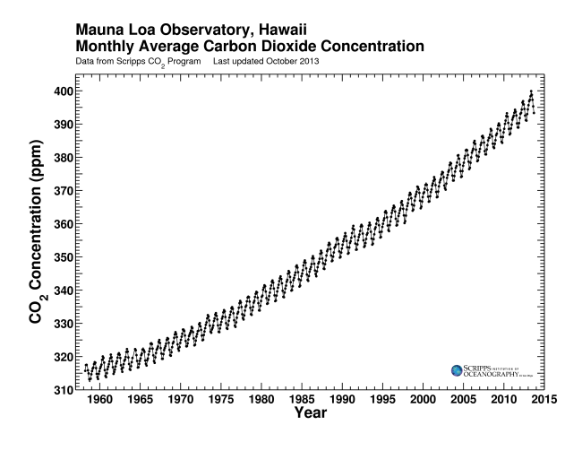
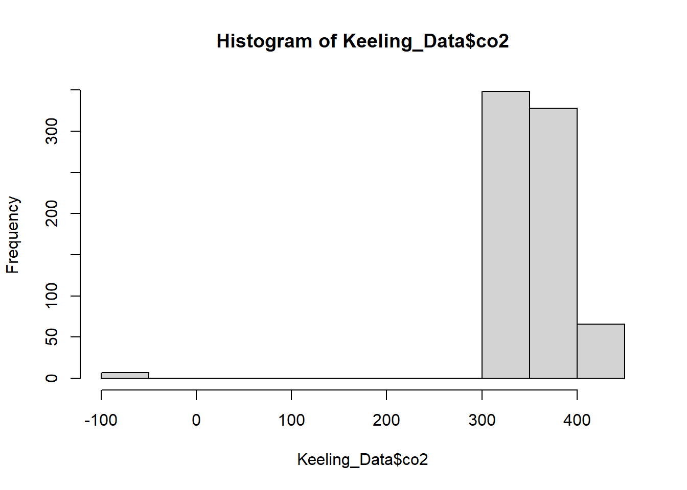
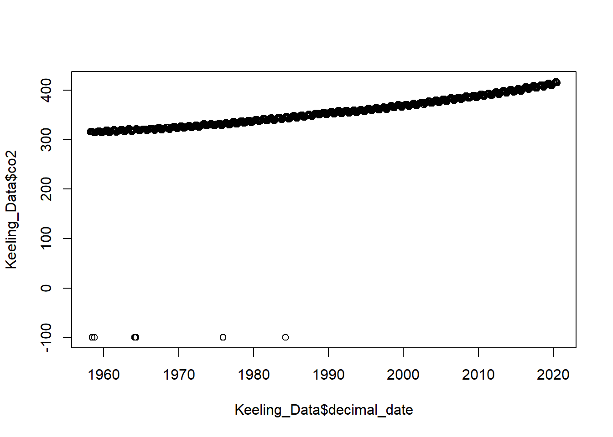
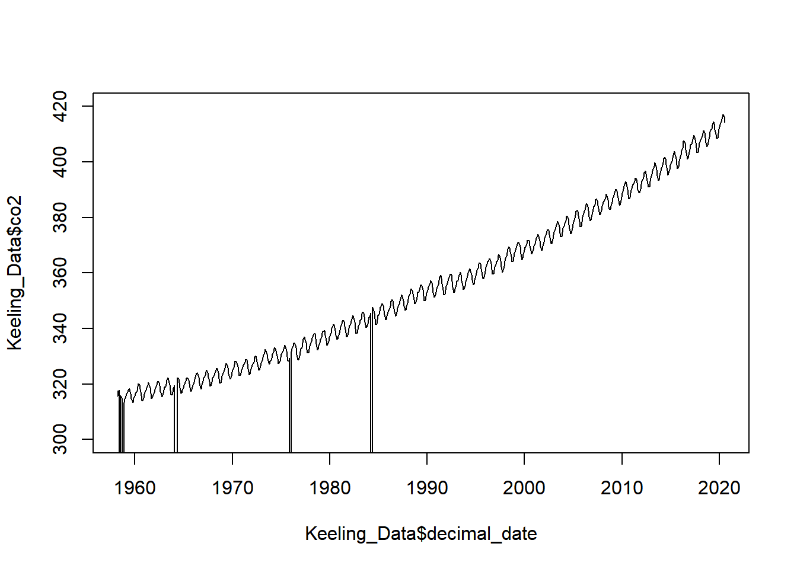
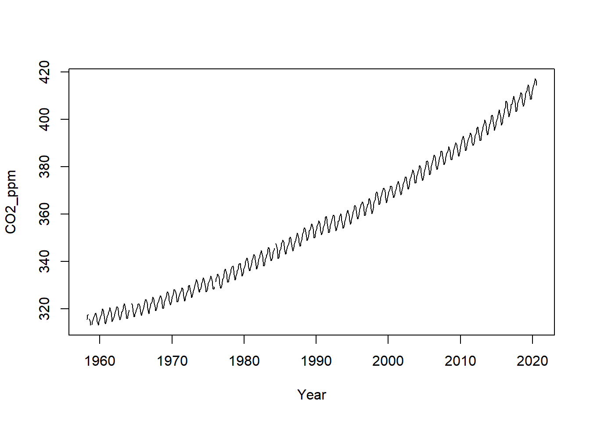
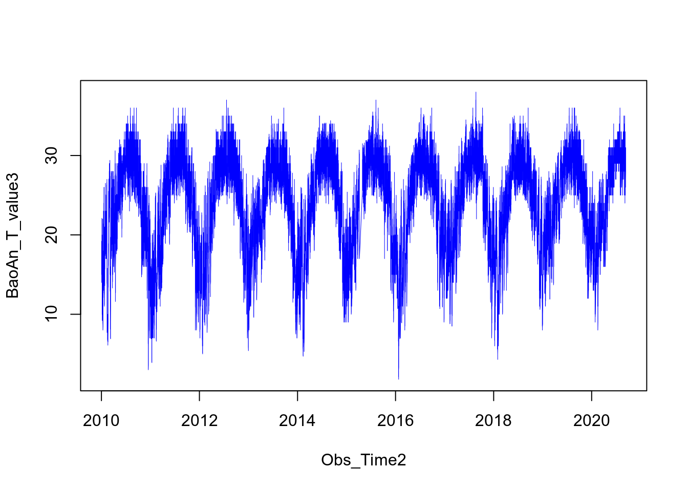

“I will, in fact, claim that the difference between a bad programmer and a good one is whether he considers his code or his data structures more important. Bad programmers worry about the code. Good programmers worry about data structures and their relationships.” - Linus Torvalds

Charles David Keeling directed a program to measure the concentrations of CO2 in the atmosphere that continued without interruption from the late 1950s through the present. This program, operated out of Scripps Institution of Oceanography, is responsible for the Mauna Loa record, which is almost certainly the best-known icon illustrating the impact of humanity on the planet as a whole. 1
We will use monthly CO2 data measured from Mauna Loa in this section.
To begin with, download the co2_mm_mlo.csv file from here. Save the file to your working directory. Take a look at the file, where the column co2 means monthly average CO2 in the unit of ppm (part per million, 10-6), quality column is the quality flag of the observation, 0 means the data point does not meet the quality control so that should be discarded, 1 means the data point is usable.
We can load this file via the following:
Now the file is loaded into the dataset Keeling_Data. Here we use the option header = T so that the first line of co2_mm_mlo.csv is loaded as names of the variables. You can try to turn this off by setting header = F, and check what happens.
Check the names of columns:
## [1] "year" "month" "decimal_date" "co2" "quality"If column names are not specified, e.g., using headers = FALSE in a read.csv() function, R assigns default names V1, V2, …, Vn.
Check the head (first 6 lines) of the dataset using head() function
## year month decimal_date co2 quality
## 1 1958 March 1958.208 315.71 1
## 2 1958 April 1958.292 317.45 1
## 3 1958 May 1958.375 317.50 1
## 4 1958 June 1958.458 -99.99 0
## 5 1958 July 1958.542 315.86 1
## 6 1958 August 1958.625 314.93 1Or the end of (last 6 lines) with tail():
## year month decimal_date co2 quality
## 744 2020 February 2020.125 414.11 1
## 745 2020 March 2020.208 414.51 1
## 746 2020 April 2020.292 416.21 1
## 747 2020 May 2020.375 417.07 1
## 748 2020 June 2020.458 416.38 1
## 749 2020 July 2020.542 414.38 1Or specify how many lines you want to check:
## year month decimal_date co2 quality
## 1 1958 March 1958.208 315.71 1
## 2 1958 April 1958.292 317.45 1
## 3 1958 May 1958.375 317.50 1## year month decimal_date co2 quality
## 746 2020 April 2020.292 416.21 1
## 747 2020 May 2020.375 417.07 1
## 748 2020 June 2020.458 416.38 1
## 749 2020 July 2020.542 414.38 1The read.table() function is used for reading in tabular data stored in a text file where the columns of data are separated by punctuation characters such as .csv files (csv = comma-separated values). Tabs and commas are the most common punctuation characters used to separate or delimit data points in .csv files. For convenience R provides 2 other versions of read.table(). These are: read.csv() for files where the data are separated with commas and read.delim() for files where the data are separated with tabs. Of these three functions, read.csv() is the most commonly used. If needed it is possible to override the default delimiting punctuation marks for both read.csv() and read.delim().
We can begin exploring our dataset right away, pulling out columns by specifying them using the $ operator:
## [1] 315.71 317.45 317.50 -99.99 315.86 314.93 313.20 -99.99 313.33 314.67 315.62 316.38 316.71 317.72 318.29 318.15 316.54 314.80 313.84
## [20] 313.26 314.80 315.58 316.43 316.97 317.58 319.02 320.03 319.59 318.18 315.91 314.16 313.83 315.00 316.19 316.93 317.70 318.54 319.48
## [39] 320.58 319.77 318.57 316.79 314.80 315.38 316.10 317.01 317.94 318.56 319.68 320.63 321.01 320.55 319.58 317.40 316.26 315.42 316.69
## [58] 317.69 318.74 319.08 319.86 321.39 322.25 321.47 319.74 317.77 316.21 315.99 317.12 318.31 319.57 -99.99 -99.99 -99.99 322.25 321.89
## [77] 320.44 318.70 316.70 316.79 317.79 318.71 319.44 320.44 320.89 322.13 322.16 321.87 321.39 318.81 317.81 317.30 318.87 319.42 320.62
## [96] 321.59 322.39 323.87 324.01 323.75 322.39 320.37 318.64 318.10 319.79 321.08 322.07 322.50 323.04 324.42 325.00 324.09 322.55 320.92
## [115] 319.31 319.31 320.72 321.96 322.57 323.15 323.89 325.02 325.57 325.36 324.14 322.03 320.41 320.25 321.31 322.84 324.00 324.42 325.64
## [134] 326.66 327.34 326.76 325.88 323.67 322.38 321.78 322.85 324.11 325.03 325.99 326.87 328.13 328.07 327.66 326.35 324.69 323.10 323.16
## [153] 323.98 325.13 326.17 326.68 327.18 327.78 328.92 328.57 327.34 325.46 323.36 323.57 324.80 326.01 326.77 327.63 327.75 329.72 330.07
## [172] 329.09 328.05 326.32 324.93 325.06 326.50 327.55 328.54 329.56 330.30 331.50 332.48 332.07 330.87 329.31 327.51 327.18 328.16 328.64
## [191] 329.35 330.71 331.48 332.65 333.19 332.16 331.07 329.12 327.32 327.28 328.30 329.58 330.73 331.46 331.90 333.17 333.94 333.45 331.97
## [210] 329.95 328.50 328.34 329.37 -99.99 331.59 332.75 333.52 334.64 334.77 334.00 333.06 330.68 328.95 328.75 330.15 331.62 332.66 333.13
## [229] 334.95 336.13 336.93 336.17 334.88 332.56 331.29 331.27 332.41 333.60 334.95 335.25 336.66 337.69 338.03 338.01 336.41 334.41 332.37
## [248] 332.41 333.75 334.90 336.14 336.69 338.27 338.95 339.21 339.26 337.54 335.75 333.98 334.19 335.31 336.81 337.90 338.34 340.01 340.93
## [267] 341.48 341.33 339.40 337.70 336.19 336.15 337.27 338.32 339.29 340.55 341.61 342.53 343.03 342.54 340.78 338.44 336.95 337.08 338.58
## [286] 339.88 340.96 341.73 342.81 343.97 344.63 343.79 342.32 340.09 338.28 338.29 339.60 340.90 341.68 342.90 343.33 345.25 346.03 345.63
## [305] 344.19 342.27 340.35 340.38 341.59 343.05 344.10 344.79 345.52 -99.99 347.63 346.98 345.53 343.55 341.40 341.67 343.10 344.70 345.21
## [324] 346.16 347.74 348.34 349.06 348.38 346.71 345.02 343.27 343.13 344.49 345.88 346.56 347.28 348.01 349.77 350.38 349.93 348.16 346.08
## [343] 345.22 344.51 345.93 347.22 348.52 348.73 349.73 351.31 352.09 351.53 350.11 348.08 346.52 346.59 347.96 349.16 350.39 351.64 352.40
## [362] 353.69 354.21 353.72 352.69 350.40 348.92 349.13 350.20 351.41 352.91 353.27 353.96 355.64 355.86 355.37 353.99 351.81 350.05 350.25
## [381] 351.49 352.85 353.80 355.04 355.73 356.32 357.32 356.34 354.84 353.01 351.31 351.62 353.07 354.33 354.84 355.73 357.23 358.66 359.13
## [400] 358.13 356.19 353.85 352.25 352.35 353.81 355.12 356.25 357.11 357.86 359.09 359.59 359.33 357.01 354.94 352.95 353.32 354.32 355.57
## [419] 357.00 357.31 358.47 359.27 360.19 359.52 357.33 355.64 354.03 354.12 355.41 356.91 358.24 358.92 359.99 361.23 361.65 360.81 359.38
## [438] 357.46 355.73 356.08 357.53 358.98 359.92 360.86 361.83 363.30 363.69 363.19 361.64 359.12 358.17 357.99 359.45 360.68 362.07 363.24
## [457] 364.17 364.57 365.13 364.92 363.55 361.38 359.54 359.58 360.89 362.24 363.09 364.03 364.51 366.35 366.64 365.59 364.31 362.25 360.29
## [476] 360.82 362.49 364.38 365.27 365.98 367.24 368.66 369.42 368.99 367.82 365.95 364.02 364.40 365.52 367.13 368.18 369.07 369.68 370.99
## [495] 370.96 370.30 369.45 366.90 364.81 365.37 366.72 368.10 369.29 369.55 370.60 371.82 371.58 371.70 369.86 368.13 367.00 367.03 368.37
## [514] 369.67 370.59 371.51 372.43 373.37 373.85 373.22 371.50 369.61 368.18 368.45 369.76 371.24 372.53 373.20 374.12 375.02 375.76 375.52
## [533] 374.01 371.85 370.75 370.55 372.25 373.79 374.88 375.64 376.45 377.73 378.60 378.28 376.70 374.38 373.17 373.15 374.66 375.99 377.00
## [552] 377.87 378.88 380.35 380.62 379.69 377.47 376.01 374.25 374.46 376.16 377.51 378.46 379.73 380.77 382.29 382.45 382.21 380.74 378.74
## [571] 376.70 377.00 378.35 380.11 381.38 382.20 382.67 384.61 385.03 384.05 382.46 380.41 378.85 379.13 380.15 381.82 382.89 383.90 384.58
## [590] 386.50 386.56 386.10 384.50 381.99 380.96 381.12 382.45 383.94 385.52 385.82 386.03 387.21 388.54 387.76 386.37 384.09 383.18 382.99
## [609] 384.19 385.56 386.94 387.48 388.82 389.55 390.14 389.48 388.03 386.11 384.74 384.43 386.02 387.42 388.71 390.20 391.17 392.46 393.00
## [628] 392.15 390.20 388.35 386.85 387.24 388.67 389.79 391.33 391.86 392.60 393.25 394.19 393.74 392.51 390.13 389.08 389.00 390.28 391.86
## [647] 393.12 393.86 394.40 396.18 396.74 395.71 394.36 392.39 391.11 391.05 392.98 394.34 395.55 396.80 397.43 398.41 399.78 398.60 397.32
## [666] 395.20 393.45 393.70 395.16 396.84 397.85 398.01 399.77 401.38 401.78 401.25 399.10 397.03 395.38 396.03 397.28 398.91 399.98 400.28
## [685] 401.54 403.28 403.96 402.80 401.31 398.93 397.63 398.29 400.16 401.85 402.56 404.12 404.87 407.45 407.72 406.83 404.41 402.27 401.05
## [704] 401.59 403.55 404.45 406.17 406.46 407.22 409.04 409.69 408.88 407.12 405.13 403.37 403.63 405.12 406.81 407.96 408.32 409.41 410.24
## [723] 411.24 410.79 408.71 406.99 405.51 406.00 408.02 409.07 410.83 411.75 411.97 413.33 414.64 413.93 411.74 409.95 408.54 408.52 410.25
## [742] 411.76 413.39 414.11 414.51 416.21 417.07 416.38 414.38Let’s do some simple statistical checks with Keeling_Data$co2:
## [1] -99.99## [1] 417.07## [1] -99.99 417.07## [1] 351.3932## [1] 352.69
## Min. 1st Qu. Median Mean 3rd Qu. Max.
## -99.99 328.92 352.69 351.39 378.60 417.07You will find there are some -99.99 values, thoese are actually missing values. We will get back to this later.
You can use [] to extract elements of a vector by specifying their corresponding index.
Important: Index in R starts from 1, not 0. For example:
## [1] 315.71 317.45 317.50 -99.99 315.86 314.93 313.20 -99.99 313.33 314.67## [1] 1974 1974 1974 1975 1975 1975 1975 1975 1975 1975 1975## numeric(0)We can mimic the Keeling Curve using plot() function

It’s ugly as there are a few data points with a value of -99.99 (quality=0). We can polish the figure by adding two more opinions ylim and type:

In fact, we should never use data points with a value of -99.99 (quality=0). One good way to do so is to set those values to NA (Not Available) or Missing Values.
Year <- Keeling_Data$decimal_date
CO2_ppm <- Keeling_Data$co2
CO2_ppm[which(CO2_ppm == -99.99)] <- NA
plot(Year, CO2_ppm, type="l")
Here we use which() function to return the indexes of elements equal to -99.99. Use type="l" to plot a line, type="p" for points, and type="o" for points + line.
Important: Always use the na.rm=T opintion to handle vectors containing NA values.
## [1] NA## [1] 355.6515The notes below are modified from the excellent online R tutorial freely available on the Software Carpentry website.
Let’s try:
## [1] 315710 317450 317500 -99990 315860 314930 313200 -99990 313330 314670By doing so, we convert CO2 in a unit of ppb (part per billion, 10-9). Then how about:
The above line won’t work as Keeling_Data$month and Keeling_Data$co2 has different data types.
In R, there are 5 main types: double, integer, complex, logical, and character. We can ask what type of data something is using the typeof() function:
## [1] "double"## [1] "character"## [1] "integer"## [1] "logical"By default, R uses float numbers. Use a L suffix to force the number to be an integer:
## [1] "double"## [1] "integer"We don’t use complex very often; it can be defined as a + bi, where a and b are numbers:
## [1] "complex"No matter how complicated our analyses become, all data in R is interpreted as one of these basic data types.
When R reads the co2_mm_mlo.csv file, it loads the table into something called a data.frame, and named it as Keeling_Data. A data.frame is a structure that R knows how to build out of the basic data types.
We can check that it is a data.frame by calling the class() function on it:
## [1] "data.frame"In order to use our data in R, we need to understand what the basic data structures are and how they behave.
To better understand data structure, let’s meet the first data structure: the vector.
## [1] FALSE FALSE FALSEA vector in R is essentially an ordered list of things, with the special condition that everything in the vector must be the same basic data type. If you don’t choose the datatype, it’ll default to logical; or, you can declare an empty vector of whatever type you like.
## [1] "" "" ""You can check if something is a vector using the str() function:
## chr [1:3] "" "" ""The output from this command indicates the basic data type found in this vector - in this case chr, or character; an indication of the number of things in the vector - actually, the indexes of the vector, in this case [1:3]; and a few examples of what’s actually in the vector - in this case empty character strings. If we similarly do:
## num [1:749] 316 317 318 -100 316 ...we see that Keeling_Data$co2 is a vector, too - the columns of data we load into R data.frames are all elements in this vector. This is why R forces everything in a column to be the same basic data type.
You can also make vectors with explicit contents with the combine function c():
## [1] 1 2 3Given what we’ve learned so far, what do you think the following will produce?
## [1] "1" "2" "3" "4"This is something called type coercion, and it is the source of many surprises and the reason why we need to be aware of the basic data types and how R will interpret them. When R encounters a mix of types (here double and character in vector_4) to be combined into a single vector, it will force them all to be the same type. Consider:
## [1] "a" "TRUE"## [1] 0 1The coercion rules go:
logical -> integer -> numeric -> complex -> character
where -> can be read as being transformed into. You can try to force coercion against this flow by calling functions with names starting with as.:
## [1] "0" "2" "4"## chr [1:3] "0" "2" "4"## [1] 0 2 4## num [1:3] 0 2 4## [1] FALSE TRUE TRUE## logi [1:3] FALSE TRUE TRUEAs you can see, some surprising things can happen when R forces one basic data type into another!
Rememebr: If your data doesn’t look like what you thought it was going to look like, type coercion may well be to blame; make sure everything is the same type in your vectors and your columns of data.frames, or you will get nasty surprises!
Coercion can also be very useful. For example, in our Keeling_Data data quality is numeric, but we know that the 1s and 0s actually represent TRUE and FALSE (a common way of representing them). We should use the logical datatype here, which has two states: TRUE or FALSE, which is exactly what our data represents. We can coerce this column to be logical by calling the as.logical() function on it:
## [1] 1 1 1 0 1 1 1 0 1 1## [1] TRUE TRUE TRUE FALSE TRUE TRUE TRUE FALSE TRUE TRUEFinally, you can use the length() function to check how many elements in a vector:
## [1] 749And use names() to give names to elements in your vector:
## A B C D E F G H I J K L M N O P Q R S T U V W X Y Z
## 2 4 6 8 10 12 14 16 18 20 22 24 26 28 30 32 34 36 38 40 42 44 46 48 50 52Notice LETTERS is a built-in vector from A to Z.
Another important data structure is factor. Factors usually look like character data but are typically used to represent categorical information.
Let’s turn Keeling_Data$month vector into a factor using the factor() function:
## chr [1:749] "March" "April" "May" "June" "July" "August" "September" "October" "November" "December" "January" "February" "March" ...## [1] "factor"## Factor w/ 12 levels "April","August",..: 8 1 9 7 6 2 12 11 10 3 ...Now R has noticed that there are 12 possible categories in Keeling_Data$month - but it also did something surprising; instead of printing out the strings we gave it, we got a bunch of numbers instead. R has replaced our human-readable categories with numbered indices under the hood. This is necessary as many statistical calculations utilize such numerical representations for categorical data.
## [1] "integer"Another data structure you’ll use is list. A list is simpler in some ways than the other types because you can put anything you want in it:
## [[1]]
## [1] 1
##
## [[2]]
## [1] "a"
##
## [[3]]
## [1] TRUE
##
## [[4]]
## [1] 1+4i## $title
## [1] "Numbers"
##
## $numbers
## [1] 1 2 3 4 5 6 7 8 9 10
##
## $data
## [1] TRUEWe can now understand something a bit surprising in our data.frame; what happens if we run:
## [1] "list"We see that a data.frame looks like list - this is because a data.frame is really a list of vectors and factors, as they have to be - in order to hold those columns that are a mix of vectors and factors, the data.frame needs something a bit more flexible than a vector to put all the columns together into a familiar table. In other words, a data.frame is a special list in which all the vectors must have the same length.
In the Keeling_Data example, we have an integer, a double, and a logical variable. As we have seen already, each column of data.frame is a vector.
## [1] 1958 1958 1958 1958 1958 1958 1958 1958 1958 1958 1959 1959 1959 1959 1959 1959 1959 1959 1959 1959 1959 1959 1960 1960 1960 1960 1960
## [28] 1960 1960 1960 1960 1960 1960 1960 1961 1961 1961 1961 1961 1961 1961 1961 1961 1961 1961 1961 1962 1962 1962 1962 1962 1962 1962 1962
## [55] 1962 1962 1962 1962 1963 1963 1963 1963 1963 1963 1963 1963 1963 1963 1963 1963 1964 1964 1964 1964 1964 1964 1964 1964 1964 1964 1964
## [82] 1964 1965 1965 1965 1965 1965 1965 1965 1965 1965 1965 1965 1965 1966 1966 1966 1966 1966 1966 1966 1966 1966 1966 1966 1966 1967 1967
## [109] 1967 1967 1967 1967 1967 1967 1967 1967 1967 1967 1968 1968 1968 1968 1968 1968 1968 1968 1968 1968 1968 1968 1969 1969 1969 1969 1969
## [136] 1969 1969 1969 1969 1969 1969 1969 1970 1970 1970 1970 1970 1970 1970 1970 1970 1970 1970 1970 1971 1971 1971 1971 1971 1971 1971 1971
## [163] 1971 1971 1971 1971 1972 1972 1972 1972 1972 1972 1972 1972 1972 1972 1972 1972 1973 1973 1973 1973 1973 1973 1973 1973 1973 1973 1973
## [190] 1973 1974 1974 1974 1974 1974 1974 1974 1974 1974 1974 1974 1974 1975 1975 1975 1975 1975 1975 1975 1975 1975 1975 1975 1975 1976 1976
## [217] 1976 1976 1976 1976 1976 1976 1976 1976 1976 1976 1977 1977 1977 1977 1977 1977 1977 1977 1977 1977 1977 1977 1978 1978 1978 1978 1978
## [244] 1978 1978 1978 1978 1978 1978 1978 1979 1979 1979 1979 1979 1979 1979 1979 1979 1979 1979 1979 1980 1980 1980 1980 1980 1980 1980 1980
## [271] 1980 1980 1980 1980 1981 1981 1981 1981 1981 1981 1981 1981 1981 1981 1981 1981 1982 1982 1982 1982 1982 1982 1982 1982 1982 1982 1982
## [298] 1982 1983 1983 1983 1983 1983 1983 1983 1983 1983 1983 1983 1983 1984 1984 1984 1984 1984 1984 1984 1984 1984 1984 1984 1984 1985 1985
## [325] 1985 1985 1985 1985 1985 1985 1985 1985 1985 1985 1986 1986 1986 1986 1986 1986 1986 1986 1986 1986 1986 1986 1987 1987 1987 1987 1987
## [352] 1987 1987 1987 1987 1987 1987 1987 1988 1988 1988 1988 1988 1988 1988 1988 1988 1988 1988 1988 1989 1989 1989 1989 1989 1989 1989 1989
## [379] 1989 1989 1989 1989 1990 1990 1990 1990 1990 1990 1990 1990 1990 1990 1990 1990 1991 1991 1991 1991 1991 1991 1991 1991 1991 1991 1991
## [406] 1991 1992 1992 1992 1992 1992 1992 1992 1992 1992 1992 1992 1992 1993 1993 1993 1993 1993 1993 1993 1993 1993 1993 1993 1993 1994 1994
## [433] 1994 1994 1994 1994 1994 1994 1994 1994 1994 1994 1995 1995 1995 1995 1995 1995 1995 1995 1995 1995 1995 1995 1996 1996 1996 1996 1996
## [460] 1996 1996 1996 1996 1996 1996 1996 1997 1997 1997 1997 1997 1997 1997 1997 1997 1997 1997 1997 1998 1998 1998 1998 1998 1998 1998 1998
## [487] 1998 1998 1998 1998 1999 1999 1999 1999 1999 1999 1999 1999 1999 1999 1999 1999 2000 2000 2000 2000 2000 2000 2000 2000 2000 2000 2000
## [514] 2000 2001 2001 2001 2001 2001 2001 2001 2001 2001 2001 2001 2001 2002 2002 2002 2002 2002 2002 2002 2002 2002 2002 2002 2002 2003 2003
## [541] 2003 2003 2003 2003 2003 2003 2003 2003 2003 2003 2004 2004 2004 2004 2004 2004 2004 2004 2004 2004 2004 2004 2005 2005 2005 2005 2005
## [568] 2005 2005 2005 2005 2005 2005 2005 2006 2006 2006 2006 2006 2006 2006 2006 2006 2006 2006 2006 2007 2007 2007 2007 2007 2007 2007 2007
## [595] 2007 2007 2007 2007 2008 2008 2008 2008 2008 2008 2008 2008 2008 2008 2008 2008 2009 2009 2009 2009 2009 2009 2009 2009 2009 2009 2009
## [622] 2009 2010 2010 2010 2010 2010 2010 2010 2010 2010 2010 2010 2010 2011 2011 2011 2011 2011 2011 2011 2011 2011 2011 2011 2011 2012 2012
## [649] 2012 2012 2012 2012 2012 2012 2012 2012 2012 2012 2013 2013 2013 2013 2013 2013 2013 2013 2013 2013 2013 2013 2014 2014 2014 2014 2014
## [676] 2014 2014 2014 2014 2014 2014 2014 2015 2015 2015 2015 2015 2015 2015 2015 2015 2015 2015 2015 2016 2016 2016 2016 2016 2016 2016 2016
## [703] 2016 2016 2016 2016 2017 2017 2017 2017 2017 2017 2017 2017 2017 2017 2017 2017 2018 2018 2018 2018 2018 2018 2018 2018 2018 2018 2018
## [730] 2018 2019 2019 2019 2019 2019 2019 2019 2019 2019 2019 2019 2019 2020 2020 2020 2020 2020 2020 2020## [1] "integer"## [1] March April May June July August September October November December January February March
## [14] April May June July August September October November December January February March April
## [27] May June July August September October November December January February March April May
## [40] June July August September October November December January February March April May June
## [53] July August September October November December January February March April May June July
## [66] August September October November December January February March April May June July August
## [79] September October November December January February March April May June July August September
## [92] October November December January February March April May June July August September October
## [105] November December January February March April May June July August September October November
## [118] December January February March April May June July August September October November December
## [131] January February March April May June July August September October November December January
## [144] February March April May June July August September October November December January February
## [157] March April May June July August September October November December January February March
## [170] April May June July August September October November December January February March April
## [183] May June July August September October November December January February March April May
## [196] June July August September October November December January February March April May June
## [209] July August September October November December January February March April May June July
## [222] August September October November December January February March April May June July August
## [235] September October November December January February March April May June July August September
## [248] October November December January February March April May June July August September October
## [261] November December January February March April May June July August September October November
## [274] December January February March April May June July August September October November December
## [287] January February March April May June July August September October November December January
## [300] February March April May June July August September October November December January February
## [313] March April May June July August September October November December January February March
## [326] April May June July August September October November December January February March April
## [339] May June July August September October November December January February March April May
## [352] June July August September October November December January February March April May June
## [365] July August September October November December January February March April May June July
## [378] August September October November December January February March April May June July August
## [391] September October November December January February March April May June July August September
## [404] October November December January February March April May June July August September October
## [417] November December January February March April May June July August September October November
## [430] December January February March April May June July August September October November December
## [443] January February March April May June July August September October November December January
## [456] February March April May June July August September October November December January February
## [469] March April May June July August September October November December January February March
## [482] April May June July August September October November December January February March April
## [495] May June July August September October November December January February March April May
## [508] June July August September October November December January February March April May June
## [521] July August September October November December January February March April May June July
## [534] August September October November December January February March April May June July August
## [547] September October November December January February March April May June July August September
## [560] October November December January February March April May June July August September October
## [573] November December January February March April May June July August September October November
## [586] December January February March April May June July August September October November December
## [599] January February March April May June July August September October November December January
## [612] February March April May June July August September October November December January February
## [625] March April May June July August September October November December January February March
## [638] April May June July August September October November December January February March April
## [651] May June July August September October November December January February March April May
## [664] June July August September October November December January February March April May June
## [677] July August September October November December January February March April May June July
## [690] August September October November December January February March April May June July August
## [703] September October November December January February March April May June July August September
## [716] October November December January February March April May June July August September October
## [729] November December January February March April May June July August September October November
## [742] December January February March April May June July
## Levels: April August December February January July June March May November October September## [1] "integer"## Factor w/ 12 levels "April","August",..: 8 1 9 7 6 2 12 11 10 3 ...Each row is an observation of different variables, itself a data.frame, and thus can be composed of elements of different types.
## year month decimal_date co2 quality
## 1 1958 March 1958.208 315.71 TRUE## [1] "list"## 'data.frame': 1 obs. of 5 variables:
## $ year : int 1958
## $ month : Factor w/ 12 levels "April","August",..: 8
## $ decimal_date: num 1958
## $ co2 : num 316
## $ quality : logi TRUEA matrix is a two-dimensional array and they are commonly used as part of the mathematical machinery of statistics. We can declare a matrix full of zeros using the matrix() function:
## [,1] [,2] [,3] [,4] [,5] [,6]
## [1,] 0 0 0 0 0 0
## [2,] 0 0 0 0 0 0
## [3,] 0 0 0 0 0 0And similar to other data structures, we can ask things about our matrix:
## [1] "matrix" "array"## [1] "double"## num [1:3, 1:6] 0 0 0 0 0 0 0 0 0 0 ...## [1] 3 6## [1] 3## [1] 6Here dim() returns the dimension of the matrix, nrow() returns the number of rows of the matrix, and ncols() returns the number of columns of the matrix.
An array is a vector with one or more dimensions. So, an array with one dimension is (almost) the same as a vector. An array with two dimensions is (almost) the same as a matrix. An array with three or more dimensions is an n-dimensional array.
Let’s create an array (3-elements vector) with NA:
## [1] NA NA NAOr we can make a 2x3 array by:
## [,1] [,2] [,3]
## [1,] NA NA NA
## [2,] NA NA NAOr even a 2x3x3 one:
## , , 1
##
## [,1] [,2] [,3]
## [1,] NA NA NA
## [2,] NA NA NA
##
## , , 2
##
## [,1] [,2] [,3]
## [1,] NA NA NA
## [2,] NA NA NA
##
## , , 3
##
## [,1] [,2] [,3]
## [1,] NA NA NA
## [2,] NA NA NACheck things about our matrix:
## [1] "array"## [1] "logical"## logi [1:2, 1:3, 1:3] NA NA NA NA NA NA ...## [1] 2 3 3Using Keeling_Data, try the following ways to call variables or elements:
Keeling_Data[2]
Keeling_Data[[2]]
Keeling_Data$month
Keeling_Data["month"]
Keeling_Data[2, 2]
Keeling_Data[, 2]
Keeling_Data[2, ]1:50, with 5 columns and 10 rows. Did the matrix() function fill your matrix by column, or by row, as its default behavior? See if you can figure out how to change this. (Hint: read the documentation using ?matrix)In this exercise, we will take a look at the hourly weather data measured at the BaoAn International Airport during the past 10 years. The data set is download from NOAA Integrated Surface Dataset.
Suppose you are asked to study how temperature varies during the past 10 years at this site.
Download the file 2281305.zip, where the number 2281305 is the site ID.
Extract the zip file, you should see a file named 2281305.csv. Save the .csv file to your working directory.
Load 2281305.csv file in R, check the variable names with the names() function. What do you observe? You can read the comprehensive user guide for variable names and format of the file.
Now assign the temperature data (named as TMP in the file) to a new vector named BaoAn_T, print the head and tail of BaoAn_T. What do you see? What is the data type of BaoAn_T, double or character?
Assign the time information (named as DATE in the file) to a new vector named Obs_Time, print the head and tail of Obs_Time. What do you see? What is the data type of Obs_Time, double or character?
You may find the temperature data is in a strange format (like +0160,1): the first digit is + (positive) or - (negative), the following four digits stand for temperature of the air in degrees Celsius with a scaling factor of 10, the value after , is the quality code where 1 means the data point passed all quality control checks. Be careful with temperature data with a value of +9999, which means the data point is missing.
You can use the function substr() to split a character. For example substr("abcde",1,3) returns abc which is a sub-string from element 1 to element 3 of abcde, while substr("abcde",5,5) returns e. Now use substr() to creat two character vectors: BaoAn_T_value for temperature values and BaoAn_T_flag for temperature quality flags.
Convert the character vector BaoAn_T_value to a numeric vector BaoAn_T_value2 using as.numeric(), and character vector BaoAn_T_flag to a logical vector BaoAn_T_flag2.
Now handle the missing values. Use which() function to figure out which elements in BaoAn_T_value2 have a value of 9999, and replace those with NA.
Now consider the scaling factor of 10, let BaoAn_T_value3 = BaoAn_T_value2 * 0.1.
Convert the character vector Obs_Time into a new vector named Obs_Time2 using the as.Date() function. By doing so, Obs_Time2 is now a class date representing calendar dates. Use ?as.Date() to learn more.
Now plot BaoAn_T_value3 as a function of Obs_Time2. Change type, lwd, and col option of plot() function to produce a figure like: 
Try min() and max() to get minimum and maximum temperature. If you get results showing NA, try to add na.rm=T option. Finally, try which.min() and which.max() to get the date with minimum and maximum temperature.
Here are the scripts, make sure you understand.
# Read the hourly data
Met_Data <- read.csv(file = "2281305.csv", header = T)
# Get variable names
names(Met_Data)
# Temperature
BaoAn_T <- Met_Data$TMP
# Time
Obs_Time <- Met_Data$DATE
# Check the head of Met_Data$TMP
head(BaoAn_T)
# Check the tail of Met_Data$TMP
tail(BaoAn_T)
# Check the head of Met_Data$DATE
head(Obs_Time)
# Check the tail of Met_Data$DATE
tail(Obs_Time)
# Split the Temperature string
BaoAn_T_value <- substr(BaoAn_T,1,5)
# Split the quality flag string
BaoAn_T_flag <- substr(BaoAn_T,7,7)
# Convert character to double
BaoAn_T_value2 <- as.numeric(BaoAn_T_value)
# Convert character to double then to logical
BaoAn_T_flag2 <- as.logical( as.numeric(BaoAn_T_flag) )
# Check which values are equal to 9999, set those to NA
BaoAn_T_value2[which(BaoAn_T_value2==9999)] <- NA
# Check which values have bad quality, set those to NA
BaoAn_T_value2[!which(BaoAn_T_flag2)] <- NA
# Apply scaling factor 0.1
BaoAn_T_value3 <- BaoAn_T_value2 * 0.1
# Convert the character vector to date vector
Obs_Time2 <- as.Date(Obs_Time)
# Plot
plot(Obs_Time2, BaoAn_T_value3, lwd=0.5, type="l", col="blue")
# Min and max of BaoAn_T_value3
min(BaoAn_T_value3, na.rm=T)
max(BaoAn_T_value3, na.rm=T)
# Date of the max and min
Obs_Time2[which.min(BaoAn_T_value3)]
Obs_Time2[which.max(BaoAn_T_value3)]